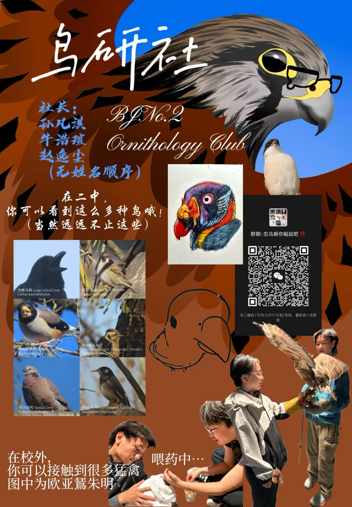

鸟研社
- 组织者
- 孙凡淇、牛浩瑄、赵逸尘
- 详细介绍
-

本页是校内板块，在这里，你可以了解到学校的基本信息，AP体系，校内的教师和课程资源，以及由教师与学生创办的不同社团。
本页贡献者：Tweet-META
北京市第二中学（本部）建于1724年，国际部建于2011年，位于本部对面。学校每年的校庆在四月一日，届时有评奖（银/金质奖章，感动二中人等）可以争取。国际部本体较小，但国际部学生共享本部食堂、操场等公共资源，同时也可以加入本部社团。
由于二国为公立国际部而非私立国际学校，学校的时间安排及各项要求与本部一致，即，学生需七点半到校上早自习，周一早自习需要前往本部升旗，每天上午需要前往本部上操，发型有要求（虽然没有很严），不允许染发、美甲等。
值得注意的一点是二国的GPA不仅和课程挂钩，还与校内表现有关，迟到、缺勤过多会影响GPA。考虑到缺勤还会进一步影响课内，建议大家请假前三思，也希望大家身体健康三年内不要生病。
二中国际部与美国瑞福蒙特高中合作办学，走AP体系，学生相当于同时就读于中美两所学校，毕业时可获取双方的毕业证，但也因此需要同时学习美高课程和中方课程（中方毕业证要求合格考全通过，如果实在学不动放弃也不是不行...？然而，由于中方课程也会影响GPA，笔者在此不作建议）。
课程分为必修和选修，高一课程固定，从高二起可以自行选课。高一较为特殊，一班额外必修AP宏观经济，同时物理相对也会更难（AP物理1），而二三班则额外与中教学习语法。部分中方课程，如体育、美术、信息等还需要前往本部上课。
老师与课程介绍详见下方链接。
如上文所述，国际部学生即可以参加国际部社团，也可以参加本部社团。本页将主要介绍国际部社团。
每个学期，部分外教会开办他们的社团，如Mr. Hodel的飞盘社。参加外教社团是提升口语和学科知识的好机会，同时也可以与外教打下良好关系，为高三的推荐信做准备。
学生也可以开办社团，但需自行申请，且社团招新也要靠自己。虽说开办社团是很好的展示领导力的方式，还可以将自己所热爱的事物传播给其他同学，但也请注意维护社团需要投入大量时间精力。
社团详情见下方折叠框。